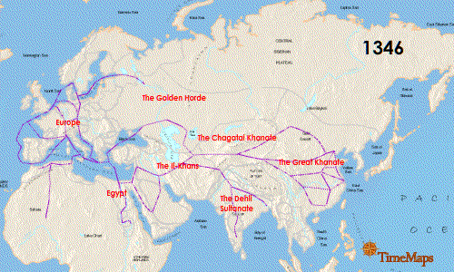

Objeto de estudio de la antropología
Para comenzar con este fascinante viaje de descubrimiento en el que vas a participar, lo primero que debes saber es el rol que vas a desempeñar. Como tú ya sabes, y tal y como te contamos en el video de bienvenida, la Antropología nos permite viajar a través del tiempo, y así te proponemos que hagas las maletas para emprender este recorrido con nosotros.
A partir de ahora, encontrarás letras de dos colores diferentes: las que se encuentran en color naranja son para que identifiques explicaciones e indicaciones que son necesarias para lograr una mayor comprensión de los temas que se abordan en esta unidad; las letras que aparecen en color negro son parte de la historia que te vamos a contar. Ahora sí, ¡damos inicio!
Imagínate que has adquirido el poder de viajar en el tiempo, traspasando las barreras del pasado y del presente. Con esta habilidad extraordinaria, podremos sumergirnos en civilizaciones ancestrales, vivir con tribus remotas y desentrañar los enigmas de las culturas que han moldeado el curso de la historia humana.
Nuestro viaje comienza en la Europa del siglo XIV, en medio de la devastación de la Peste Negra. En una ciudad italiana, ves el horror de calles llenas de cadáveres y personas suplicando ayuda. La Peste Bubónica ha dejado una estela de muerte y miseria en toda Europa.

Animación que muestra la propagación de la Peste Negra desde 1346 hasta 1351. Imagen de Timemaps. Wikimedia Common
¿Qué haría un antropólogo al llegar a este momento histórico? Los antropólogos observan lo que se encuentran a su alrededor y preguntan directamente a las personas lo que ocurre.
Escuchas gritos de dolor, miedo y desesperación. Te acercas a un grupo que se dirige a una iglesia, rezando por liberarse de la peste, al preguntarles por sus motivos algunos te dicen que creen que es un castigo divino y se someten a penitencias y flagelaciones. Otros culpan a los judíos y los persiguen.
Nos dirigimos a las afueras de la ciudad, donde ves campos abandonados y animales muertos por la peste que también diezmó a los campesinos. Sin embargo, algunos sobrevivientes han heredado tierras y mejorado sus condiciones con el señor feudal.
En una ciudad francesa, observas una revuelta popular contra el rey y la nobleza debido a los impuestos aumentados para financiar la guerra contra Inglaterra. Los artesanos aprovechan la situación y han visto beneficios con la alta demanda de sus productos y salarios mejorados.
En una ciudad alemana, encuentras a los danzantes de la peste, un movimiento religioso que cree que bailando pueden liberarse del pecado y la enfermedad. Te contagias de su alegría y locura.
Has vivido una experiencia única e inolvidable, presenciando cómo la peste negra del siglo XIV afectó a las personas en todos los aspectos: biológicos, sociales y culturales. Observaste diversas reacciones ante la tragedia: fe, miedo, violencia, rebeldía, resignación y esperanza. Además, comprendiste cómo la peste influyó en la historia, economía, política, religión y cultura. Los antropólogos estudian los aspectos sociales, biológicos y culturales, en contextos evolutivos e históricos determinados, que incluye creencias, valores, normas, costumbres, lenguaje, símbolos y prácticas que caracterizan a un grupo humano y se transmiten de generación en generación (Giménez, 2021). En tu recorrido, exploraste y comparaste cómo diferentes comunidades afrontaron este acontecimiento y sus efectos a nivel político, económico, social y religioso.
La antropología no solo se encarga de estudiar culturas del pasado, también estudia al ser humano en la actualidad. ¿Puedes recordar algún acontecimiento similar a la peste negra que hayas vivido tú?
Probablemente hayas pensado en la pandemia por COVID-19, que comenzó en 2020 en México. ¿Qué te parece si ahora visitamos México en el 2020?
Llegamos a la Ciudad de México en el 2020, donde ves a personas usando mascarillas y medidas de distanciamiento social. La pandemia ha transformado la vida, impactando la salud pública, la economía y las relaciones sociales. Al igual que en la época de la Peste Negra, la población enfrenta incertidumbre y miedo. Escuchas noticias, rumores y quejas. Te acercas a un grupo que va a un centro de vacunación, considerando la vacuna como la esperanza para superar la pandemia. Otro grupo desconfía de la vacuna, temiendo efectos secundarios graves o una conspiración mundial.
Nos alejamos y notas la preocupación y el estrés en la ciudad, debido a la crisis económica provocada por la pandemia. Empresarios exigen más apoyo y menos restricciones, mientras los trabajadores luchan por mejores condiciones laborales y protección sanitaria. Te acercas a obreros en huelga frente a una maquiladora, miembros de un sindicato independiente, buscando cambios en el sistema económico y político.
En Tláhuac, la pandemia ha afectado a los campesinos de manera diferente. Algunos han tenido dificultades para vender y acceder a servicios de salud, mientras otros fortalecen sus redes comunitarias y prácticas tradicionales. Un campesino te cuenta sobre el apoyo del gobierno para sembrar maíz criollo y su participación en intercambio de semillas con otros campesinos. Utiliza medicina natural, como el eucalipto, orégano y ajo, para prevenir y tratar la enfermedad. El campesino está orgulloso de su parcela, familia y animales, y espera que la pandemia termine pronto.

El quehacer de un antropólogo
Con el recorrido que hemos hecho entre estos dos momentos históricos, ya puedes darte una idea del quehacer del antropólogo. Antes de continuar con este viaje, te invitamos a participar en el siguiente foro.
¡Qué bueno que ya estás de regreso! Seguramente has aprendido mucho con las aportaciones de tus compañeros.
Regresemos a nuestro tiempo y analicemos juntos lo que hemos aprendido.
Has visto cómo el COVID-19 cambió el mundo en el siglo XXI, afectando a las personas en aspectos biológicos, sociales y culturales. Observaste respuestas y adaptaciones de comunidades, cambios en prácticas culturales, creencias y comportamientos sociales relacionados con la salud y la enfermedad. Notaste su influencia en la historia, economía, política y cultura.
COVID 19 comparte similitudes con la peste negra: propagación global, millones de muertes y alteración del orden social. Generó respuestas diversas, desde la fe hasta la violencia.
Sin embargo, hay diferencias importantes: COVID- 19 surgió en un mundo más globalizado, por lo que afectó a una población mayor en menor tiempo, también como humanidad hemos tenido la posibilidad de enfrentar a este patógeno con más conocimiento científico, y a la vez en un contexto en el que existe también mayor desinformación y desconfianza. La antropología nos ayuda a entender estas similitudes y diferencias, la adaptación al cambio y su impacto en las personas. Respetando la diversidad, busca soluciones colectivas y nos ayuda a ser más humanos. Es decir, el objeto de estudio de la antropología es la comprensión integral de la humanidad en todas sus dimensiones, tanto culturales como biológicas y sociales. La antropología busca analizar y comprender la diversidad humana, las prácticas culturales, las estructuras sociales, las interacciones humanas, la evolución biológica y cultural, y cómo estas diferentes facetas se interrelacionan (Giménez, 2021).
Ahora que es más claro cuál es el objeto de estudio de la antropología, ¿has pensado alguna vez cuál es la diferencia entre Antropología, Historia y Sociología? Podría parecer que estudian exactamente lo mismo, pues todas pertenecen a las ciencias sociales, ¿cuál crees que sea la diferencia entre ellas? Da clic a continuación para averiguarlo.
Estas tres disciplinas se complementan y se nutren entre sí para ofrecer una visión completa y profunda de la condición humana y su desarrollo histórico y social. Como puedes ver, la antropología es una ciencia fascinante y útil para comprender al ser humano en toda su complejidad.

Objeto de estudio de la antropología
Llegó el momento de poner en práctica lo aprendido, participa en este reto que te proponemos.
Para saber más
Si quieres aprender más sobre cómo la antropología ha estudiado la pandemia de COVID- 19, te invitamos a que le eches un ojo a los artículos que llamen tu atención de la revista “Ichan Tecolotl” que está enfocada a temas de antropología, ciencias sociales y humanidades, te recomendamos dar lectura a algunos de la edición de mayo de 2020. Para acceder a ellos, da clic en la imagen que aparece a continuación.
Te invitamos a continuar con este fascinante viaje.